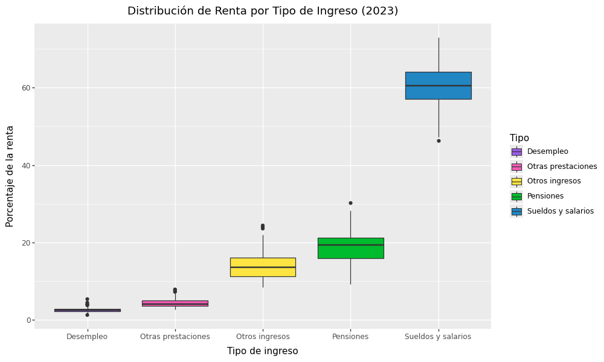
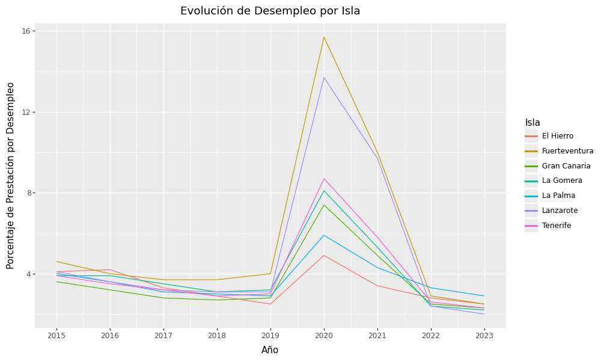
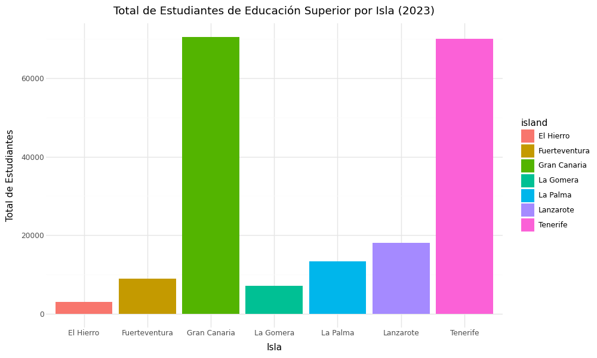
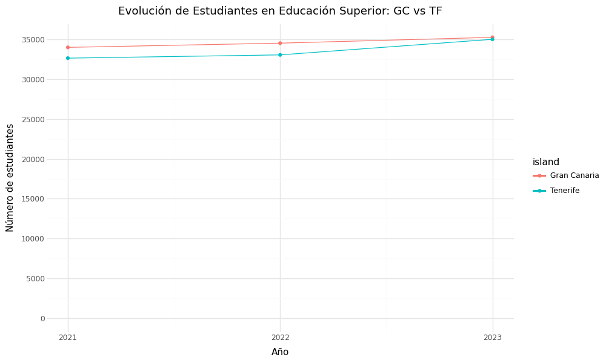

Distribución de Renta (2023)
Análisis comparativo de los diferentes tipos de ingresos y prestaciones por municipio.
Exploración visual de la socioeconomía en el archipiélago canario mediante análisis de renta, educación y demografía.

Análisis comparativo de los diferentes tipos de ingresos y prestaciones por municipio.

Evolución temporal del impacto de las prestaciones por desempleo en la renta de cada isla.

Distribución total de estudiantes universitarios y de ciclos superiores en las islas.

Comparativa histórica de estudiantes de educación superior entre Tenerife y Gran Canaria.
¿Quieres ver el detalle geográfico por municipio?
Explorar Mapa Interactivo